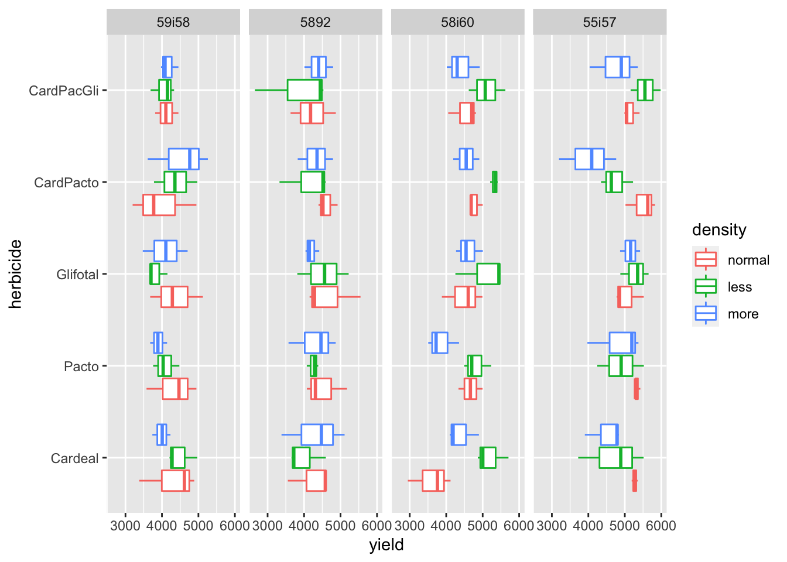
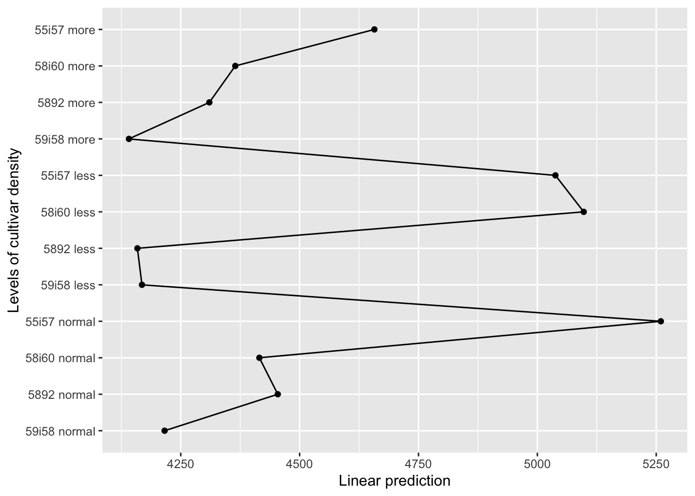
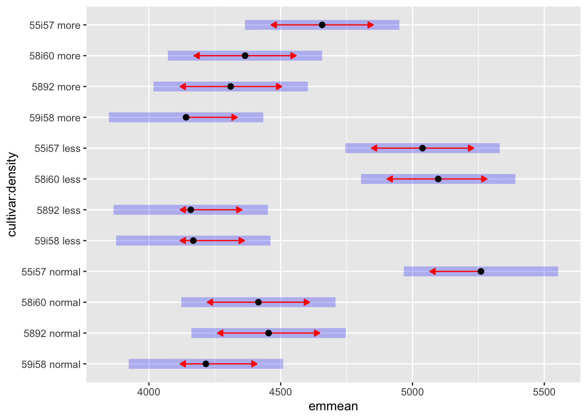

── Attaching packages ─────────────────────────────────────── tidyverse 1.3.2 ──
✔ ggplot2 3.3.6 ✔ purrr 0.3.4
✔ tibble 3.1.8 ✔ dplyr 1.0.10
✔ tidyr 1.2.1 ✔ stringr 1.4.1
✔ readr 2.1.2 ✔ forcats 0.5.2
── Conflicts ────────────────────────────────────────── tidyverse_conflicts() ──
✖ dplyr::filter() masks stats::filter()
✖ dplyr::lag() masks stats::lag()
Carregando pacotes exigidos: Matrix
Attaching package: 'Matrix'
The following objects are masked from 'package:tidyr':
expand, pack, unpack
Attaching package: 'lmerTest'
The following object is masked from 'package:lme4':
lmer
The following object is masked from 'package:stats':
step
Carregando pacotes exigidos: mvtnorm
Carregando pacotes exigidos: survival
Carregando pacotes exigidos: TH.data
Carregando pacotes exigidos: MASS
Attaching package: 'MASS'
The following object is masked from 'package:dplyr':
select
Attaching package: 'TH.data'
The following object is masked from 'package:MASS':
geyseranalyses
readxl::read_excel("rudell_soybeans_experiment.xlsx",
sheet = "SheetInjury_yield") %>%
janitor::clean_names() %>%
mutate(density = case_when(
cultivar == "59i58" ~ "normal",
cultivar == "59i58less" ~ "less",
cultivar == "59i58more" ~ "more",
cultivar == "5892" ~ "normal",
cultivar == "5892less" ~ "less",
cultivar == "5892more" ~ "more",
cultivar == "58i60" ~ "normal",
cultivar == "58i60less" ~ "less",
cultivar == "58i60more" ~ "more",
cultivar == "55i57" ~ "normal",
cultivar == "55i57less" ~ "less",
cultivar == "55i57more" ~ "more",
TRUE ~ NA_character_)) %>%
mutate(cultivar = str_remove_all(cultivar, "[lessmore]"),
injury = as_factor(injury),
rep = as_factor(rep)) %>%
mutate_if(is_character, as_factor) %>%
dplyr::select(cultivar, herbicide, density, rep, injury, injury_7d, yield) %>%
rename(dat = injury,
injury = injury_7d) -> datadata %>%
ggplot(aes(x = herbicide, y = yield, color = density)) +
geom_boxplot() +
facet_grid(~cultivar) +
coord_flip()
data# A tibble: 180 × 7
cultivar herbicide density rep dat injury yield
<fct> <fct> <fct> <fct> <fct> <dbl> <dbl>
1 59i58 Cardeal normal 1 7 12 3378.
2 59i58 Cardeal normal 2 7 0 4615.
3 59i58 Cardeal normal 3 7 3 4885.
4 59i58 Pacto normal 1 7 0 3578.
5 59i58 Pacto normal 2 7 3 4467.
6 59i58 Pacto normal 3 7 0 4944.
7 59i58 Glifotal normal 1 7 0 3678.
8 59i58 Glifotal normal 2 7 8 5122.
9 59i58 Glifotal normal 3 7 2 4285.
10 59i58 CardPacto normal 1 7 8 3196.
# … with 170 more rowslmer(yield ~ herbicide * density * cultivar + (1|rep),
REML = TRUE, data = data) -> model_yieldanova(model_yield)Type III Analysis of Variance Table with Satterthwaite's method
Sum Sq Mean Sq NumDF DenDF F value Pr(>F)
herbicide 827987 206997 4 118 0.7217 0.578776
density 2192171 1096085 2 118 3.8215 0.024653 *
cultivar 17613753 5871251 3 118 20.4702 9.52e-11 ***
herbicide:density 1130345 141293 8 118 0.4926 0.859445
herbicide:cultivar 2833830 236152 12 118 0.8233 0.626154
density:cultivar 6315998 1052666 6 118 3.6701 0.002231 **
herbicide:density:cultivar 6699051 279127 24 118 0.9732 0.506024
---
Signif. codes: 0 '***' 0.001 '**' 0.01 '*' 0.05 '.' 0.1 ' ' 1emmip(model_yield, ~ cultivar * density) +
coord_flip()NOTE: Results may be misleading due to involvement in interactions
lsmeans <- emmeans(model_yield, ~ cultivar * density,
cont="pairwise",
adjust = "none",
alpha = 0.05)NOTE: Results may be misleading due to involvement in interactionslsmeans$emmeans
cultivar density emmean SE df lower.CL upper.CL
59i58 normal 4216 146 48 3923 4509
5892 normal 4454 146 48 4161 4747
58i60 normal 4415 146 48 4123 4708
55i57 normal 5260 146 48 4967 5553
59i58 less 4168 146 48 3876 4461
5892 less 4159 146 48 3866 4452
58i60 less 5098 146 48 4805 5390
55i57 less 5038 146 48 4745 5331
59i58 more 4141 146 48 3848 4434
5892 more 4310 146 48 4017 4603
58i60 more 4365 146 48 4072 4657
55i57 more 4657 146 48 4364 4950
Results are averaged over the levels of: herbicide
Degrees-of-freedom method: kenward-roger
Confidence level used: 0.95
$contrasts
contrast estimate SE df t.ratio p.value
59i58 normal - 5892 normal -238.02 196 118 -1.217 0.2260
59i58 normal - 58i60 normal -199.26 196 118 -1.019 0.3103
59i58 normal - 55i57 normal -1043.70 196 118 -5.337 <.0001
59i58 normal - 59i58 less 47.65 196 118 0.244 0.8079
59i58 normal - 5892 less 57.28 196 118 0.293 0.7701
59i58 normal - 58i60 less -881.48 196 118 -4.508 <.0001
59i58 normal - 55i57 less -821.98 196 118 -4.203 0.0001
59i58 normal - 59i58 more 75.06 196 118 0.384 0.7018
59i58 normal - 5892 more -94.07 196 118 -0.481 0.6314
59i58 normal - 58i60 more -148.64 196 118 -0.760 0.4487
59i58 normal - 55i57 more -441.23 196 118 -2.256 0.0259
5892 normal - 58i60 normal 38.77 196 118 0.198 0.8432
5892 normal - 55i57 normal -805.68 196 118 -4.120 0.0001
5892 normal - 59i58 less 285.68 196 118 1.461 0.1467
5892 normal - 5892 less 295.31 196 118 1.510 0.1337
5892 normal - 58i60 less -643.46 196 118 -3.290 0.0013
5892 normal - 55i57 less -583.95 196 118 -2.986 0.0034
5892 normal - 59i58 more 313.09 196 118 1.601 0.1121
5892 normal - 5892 more 143.95 196 118 0.736 0.4631
5892 normal - 58i60 more 89.38 196 118 0.457 0.6485
5892 normal - 55i57 more -203.21 196 118 -1.039 0.3009
58i60 normal - 55i57 normal -844.44 196 118 -4.318 <.0001
58i60 normal - 59i58 less 246.91 196 118 1.263 0.2092
58i60 normal - 5892 less 256.54 196 118 1.312 0.1921
58i60 normal - 58i60 less -682.22 196 118 -3.489 0.0007
58i60 normal - 55i57 less -622.72 196 118 -3.184 0.0019
58i60 normal - 59i58 more 274.32 196 118 1.403 0.1633
58i60 normal - 5892 more 105.19 196 118 0.538 0.5917
58i60 normal - 58i60 more 50.62 196 118 0.259 0.7962
58i60 normal - 55i57 more -241.98 196 118 -1.237 0.2184
55i57 normal - 59i58 less 1091.36 196 118 5.581 <.0001
55i57 normal - 5892 less 1100.99 196 118 5.630 <.0001
55i57 normal - 58i60 less 162.22 196 118 0.830 0.4085
55i57 normal - 55i57 less 221.73 196 118 1.134 0.2592
55i57 normal - 59i58 more 1118.77 196 118 5.721 <.0001
55i57 normal - 5892 more 949.63 196 118 4.856 <.0001
55i57 normal - 58i60 more 895.06 196 118 4.577 <.0001
55i57 normal - 55i57 more 602.47 196 118 3.081 0.0026
59i58 less - 5892 less 9.63 196 118 0.049 0.9608
59i58 less - 58i60 less -929.14 196 118 -4.751 <.0001
59i58 less - 55i57 less -869.63 196 118 -4.447 <.0001
59i58 less - 59i58 more 27.41 196 118 0.140 0.8888
59i58 less - 5892 more -141.73 196 118 -0.725 0.4700
59i58 less - 58i60 more -196.30 196 118 -1.004 0.3175
59i58 less - 55i57 more -488.89 196 118 -2.500 0.0138
5892 less - 58i60 less -938.77 196 118 -4.800 <.0001
5892 less - 55i57 less -879.26 196 118 -4.496 <.0001
5892 less - 59i58 more 17.78 196 118 0.091 0.9277
5892 less - 5892 more -151.36 196 118 -0.774 0.4405
5892 less - 58i60 more -205.93 196 118 -1.053 0.2945
5892 less - 55i57 more -498.52 196 118 -2.549 0.0121
58i60 less - 55i57 less 59.51 196 118 0.304 0.7614
58i60 less - 59i58 more 956.54 196 118 4.891 <.0001
58i60 less - 5892 more 787.41 196 118 4.026 0.0001
58i60 less - 58i60 more 732.84 196 118 3.747 0.0003
58i60 less - 55i57 more 440.25 196 118 2.251 0.0262
55i57 less - 59i58 more 897.04 196 118 4.587 <.0001
55i57 less - 5892 more 727.90 196 118 3.722 0.0003
55i57 less - 58i60 more 673.33 196 118 3.443 0.0008
55i57 less - 55i57 more 380.74 196 118 1.947 0.0539
59i58 more - 5892 more -169.14 196 118 -0.865 0.3889
59i58 more - 58i60 more -223.70 196 118 -1.144 0.2550
59i58 more - 55i57 more -516.30 196 118 -2.640 0.0094
5892 more - 58i60 more -54.57 196 118 -0.279 0.7807
5892 more - 55i57 more -347.16 196 118 -1.775 0.0784
58i60 more - 55i57 more -292.59 196 118 -1.496 0.1373
Results are averaged over the levels of: herbicide
Degrees-of-freedom method: kenward-roger plot(lsmeans$emmeans, ~ cultivar * density,
comparisons = TRUE,
alpha=0.05,
adjust="none")
cld_yield <- cld(lsmeans$emmeans,
alpha=0.05,
Letters = letters,
adjust = "none",
reversed = TRUE)
cld_yield cultivar density emmean SE df lower.CL upper.CL .group
55i57 normal 5260 146 48 4967 5553 a
58i60 less 5098 146 48 4805 5390 a
55i57 less 5038 146 48 4745 5331 ab
55i57 more 4657 146 48 4364 4950 bc
5892 normal 4454 146 48 4161 4747 cd
58i60 normal 4415 146 48 4123 4708 cd
58i60 more 4365 146 48 4072 4657 cd
5892 more 4310 146 48 4017 4603 cd
59i58 normal 4216 146 48 3923 4509 d
59i58 less 4168 146 48 3876 4461 d
5892 less 4159 146 48 3866 4452 d
59i58 more 4141 146 48 3848 4434 d
Results are averaged over the levels of: herbicide
Degrees-of-freedom method: kenward-roger
Confidence level used: 0.95
significance level used: alpha = 0.05
NOTE: If two or more means share the same grouping letter,
then we cannot show them to be different.
But we also did not show them to be the same.